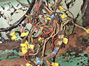
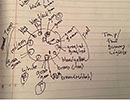
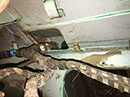
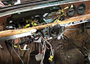
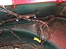
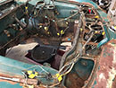
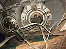
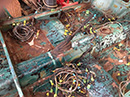

May 2017- Wiring Harness
Do You Really Want to do This? 
{kind=link}
2000C/CA Wiring Click to Enlarge
Printable PDF Schematic (6 mb) and Schematic Key (3 mb)
|
Schaltplan auf Deutsch
klicken um zu vergrößern
Druckbares PDF-Schema (700kb) und Erläuterung (700kb) |
{kind=link}
{kind=link}
Become One with the Circuit
The monstrous spaghetti mass of harness - it’s mostly psychological. When one first glances at those bundles of wiring running in all directions, an almost immediate feeling of being overwhelmed sets in. A different mindset takes over when you start identifying and labeling connections to various components (lights, gauges, switches, relays). It almost feels like you are becoming part of the system, getting down to the trees in the forest, moving along it from location to location, understanding gauge size, color, etc.

{kind=link}
On the 1966 BMW 2000 c, the harness needs to be withdrawn from the engine and trunk area into the cockpit of the car. It can’t go the other way. There is a thick “nexus” where 
{kind=link}
Interior Dash and Console
I labeled and removed all the gauges and console switches when I removed the dash board. This was my first taste at how complex some of these units 
{kind=link}
Trunk Area 
Start with rear which includes wiring running to both rear tail-brake-turn signal lights, gas tank sensor, and the light for the trunk. The harness to these 4 trunk area units runs through a port on the driver’s side of the car running underneath the rear seat area. When you pull it
{kind=link}
Engine area
The harness to the engine area can be grouped into various groups. First are the connections to the headlights, horns, and hood dome light. The next grouping goes to the big units like the battery, alternator, and starter. Then there are the various modules and sensors like the voltage regulator, dip relay (low beam/high beams), brake, 
{kind=link}
There are actually three ports running from the cockpit into the engine compartment. There are two side-by-side ports running directly underneath the instrument gauge area under the dash. There is a third port on the passenger side that feeds the coil, windshield wiper motor, and washer unit.
The first step is to remove the various components still remaining. I had already removed the engine, starter, alternator and battery. My next step was to go relay by relay documenting, photographing labeling and setting aside. I cannot help but wonder if any of these aged, crusty units are any good and will I be able to find replacements.
Headlights

{kind=link}
The Two Ports
I named the two major holes through the firewall “Port 1” and “Port 2”. One of the ports only runs wiring to most of the fuses. I chose to pull that one through into the cockpit first. Once through, I also slid the labeled wires from the instrument cluster, signals and switches out of the way with the mass. A sense of less complication and clarity sets in when the first simpler bundle is removed.
The next bundled extension requires aforethought. Some clusters of plugs cannot be pulled through en masse. Really take your time and fish them through piece meal especially to avoid ripping or smudging the identification tags.
Passenger Side Ports Front and Rear
Pulling the wiring through the few connections via the firewall and the rear passenger window are much simpler.

{kind=link}
I grouped the various bundles in the cockpit of the car. This included 1) trunk area bundle 2) passenger rear and door bundle 3) passenger firewall bundle 4) console bundle 5) interior gauges and switches bundle (large) 6) the larger bundle from engine compartment 7) the smaller bundle from the engine compartment.
The "nexus" (what I call it) is the center of everything and must be reinstalled perfectly. Take note of how the nexus of the harness has moved and where it came from. Label the nexus with an arrow denoting where it fits. Label where the bundles clip to the sheet metal of the car. Also label where the harness goes through various ports in the sheet metal. Label where the harness fits in the corners (ex. driver’s side kick panel top).
Bag Your Sub Bundles
I bagged each bundle and labeled the bag. I diagramed or mapped where each labeled bag of bundles is situated in the car. Then I carefully placed a box with orientation noted on the box (front, drivers side with arrow) and placed the bags in logically always noting how the nexus is moving from its original location. The labeled nexus will be sort of hanging out of the box.
{kind=link}
Box Your Sub Bundles
When re-assembling, place the box back (passenger side floor), and remove each bagged item and place where you removed it from by referring to your diagram or map. This is vital because chances are the reassembly will months or possibly a year or more before you actually re-install. With each bag going back to the diagram location, the nexus will fall out and back to where it is intended to go.
{kind=link}